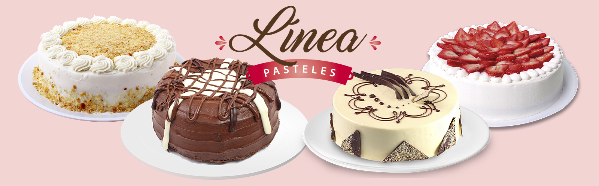

|
Abrimos nuestras puertas por primera vez en 1884 entre las calles que hoy se conocen como Madero e Isabel la Católica, con el objetivo de alegrar y regalarle un dulce sabor de boca a cada uno de nuestros comensales en la Ciudad de México. Nuestro nombre está inspirado en uno de los inventos tecnológicos más importantes de la época, el globo aerostático. |
Conforme la Ciudad de México siguió creciendo nosotros lo hicimos con ella, multiplicando nuestras sucursales para poder ofrecer en diferentes puntos una nueva variedad de pasteles y pan de la más alta calidad. No quisimos quedarnos ahí, y nos dimos a la tarea de expandir nuestro sabor en diferentes partes de la República, gracias a este esfuerzo hoy contamos con más de 170 sucursales El Globo con presencia en 24 ciudades del país. |
Hoy en día somos un ícono de la repostería en México por nuestros clásicos pasteles y panadería de alta calidad, innovación continua y servicio excepcional. Gracias a ello nos hemos ganado el corazón y preferencia de cada uno de nuestros invitados. Pasteleria, pasión por la repostería. |
|  | ||
© 2021 Todos los derechos reservados